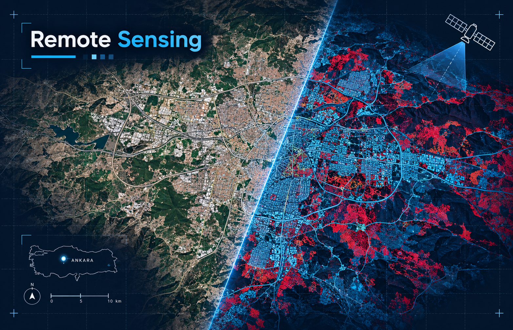

My Projects
Some of the projects and technologies I have worked with during my Geomatics Engineering education are presented below.
| Image | Project | Technology | Description |
|---|---|---|---|
|
 |
Remote Sensing | QGIS | Satellite imagery analysis and visualization using GIS software. |
| GNSS Positioning | GNSS | Positioning and coordinate analysis using satellite-based measurements. | |
| Web GIS | OpenLayers / Leaflet | Interactive web map development using JavaScript mapping libraries. |